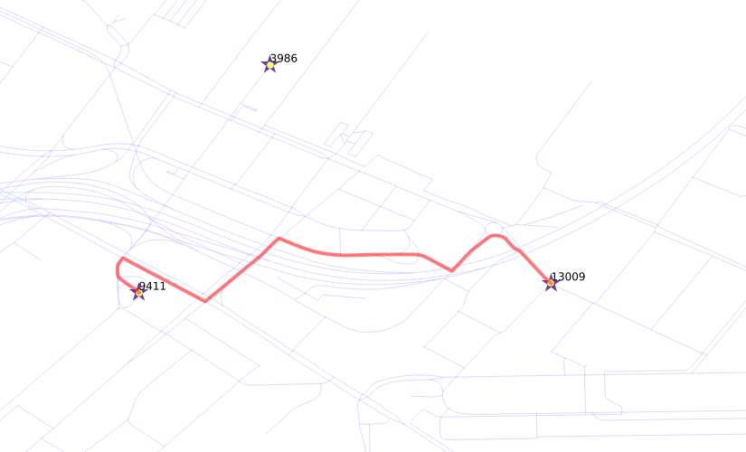
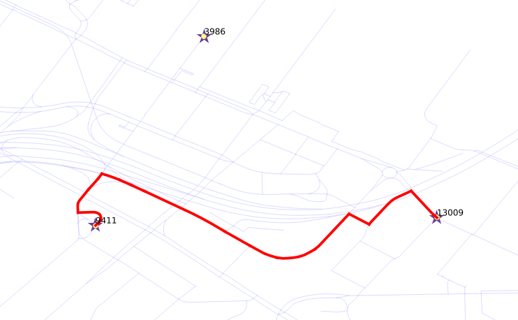

Routing, is not limited to pedestrians. This chapter covers routing vehicles
and manipulation of the query costs:
A query for vehicle routing generally differs from routing for pedestrians:
- the road segments are considered directed,
- the reverse_cost attribute must be taken into account.
This is due to the fact that there are roads that
are “one way”.
Depending on the geometry, the valid way:
- (source, target) segment (
cost >= 0 and reverse_cost < 0)
- (target, source) segment (
cost < 0 and reverse_cost >= 0)
So a “wrong way” is indicated with a negative value and is not inserted in the
graph for processing.
For two way roads cost >= 0 and reverse_cost >= 0 and their values can
be different. For example, it is faster going down hill on a sloped road.
In general cost and reverse_cost do not need to be length; they can be
almost anything, for example time, slope, surface, road type, etc., or they can
be a combination of multiple parameters.
The following queries indicate the number of road segments, where a “one way” rule applies:
Number of (source, target) segments with cost < 0
SELECT count(*)
FROM ways
WHERE cost < 0;
Number of (target, source) segments with reverse_cost < 0
SELECT count(*)
FROM ways
WHERE reverse_cost < 0;
From the Westin, going to the Brewry by car.

- The vehicle is going from vertex
9411 to vertex 13009.
- Use
cost and reverse_cost columns, which are in unit degrees.
SELECT * FROM pgr_dijkstra(
'SELECT gid AS id,
source,
target,
cost_s AS cost,
reverse_cost_s AS reverse_cost
FROM ways',
9411, 13009,
directed := true);
Solution to Exercise 7
From the Brewry, going to the Westin by car.

- The vehicle is going from vertex
13009 to vertex 9411.
- Use
cost and reverse_cost columns, which are in unit degrees.
SELECT * FROM pgr_dijkstra(
'SELECT gid AS id,
source,
target,
cost_s AS cost,
reverse_cost_s AS reverse_cost
FROM ways',
13009, 9411, directed := true);
Solution to Exercise 8
Note
On a directed graph, going and coming back routes, most of the time are different.
From the Brewry, going to the Westin by taxi. Fee: $100/hour
- The vehicle is going from vertex
13009 to vertex 9411.
- The cost is
$100 per hour.
- Use
cost_s and reverse_cost_s columns, which are in unit seconds.
- The duration in hours is
cost / 3600
- The cost in
$ is cost / 3600 * 100
SELECT * FROM pgr_dijkstra('
SELECT gid AS id,
source,
target,
cost_s / 3600 * 100 AS cost,
reverse_cost_s / 3600 * 100 AS reverse_cost
FROM ways',
13009, 9411);
Solution to Exercise 9
Note
Comparing with Exercise 8:
- The total number of records are identical
- The node sequence is identical
- The edge sequence is identical
- The cost and agg_cost results are directly proportional
In “real” networks there are different limitations or preferences for different
road types for example. In other words, we don’t want to get the shortest but
the cheapest path - a path with a minimal cost. There is no limitation in
what we take as costs.
When we convert data from OSM format using the osm2pgrouting tool, we get two
additional tables: osm_way_types and osm_way_classes:
osm_way_types
SELECT * FROM osm_way_types ORDER BY type_id;
seq | path_seq | node | edge | cost | agg_cost
-----+----------+-------+-------+-------------------+------------------
1 | 1 | 13009 | 8374 | 6.51123121343855 | 0
2 | 2 | 7444 | 15952 | 9.22333158615332 | 6.51123121343855
3 | 3 | 9616 | 15953 | 3.60082042999407 | 15.7345627995919
4 | 4 | 10458 | 15574 | 6.87171408112042 | 19.3353832295859
5 | 5 | 9435 | 15573 | 4.90611338297315 | 26.2070973107064
6 | 6 | 7772 | 18760 | 3.71331394990179 | 31.1132106936795
7 | 7 | 7010 | 18773 | 3.69594218190552 | 34.8265246435813
8 | 8 | 7788 | 3201 | 11.5360212979419 | 38.5224668254868
9 | 9 | 10597 | 3202 | 1.74040357533245 | 50.0584881234287
10 | 10 | 5594 | 3203 | 1.62500852328745 | 51.7988916987612
11 | 11 | 10131 | 18747 | 2.27877440455693 | 53.4239002220486
12 | 12 | 3668 | 5724 | 0.829437047814006 | 55.7026746266056
13 | 13 | 2036 | 5723 | 2.09060263217087 | 56.5321116744196
14 | 14 | 288 | 5722 | 4.03407287728929 | 58.6227143065904
15 | 15 | 10202 | 16390 | 5.79083839389503 | 62.6567871838797
16 | 16 | 9411 | -1 | 0 | 68.4476255777748
(16 rows)
osm_way_classes
SELECT * FROM osm_way_classes ORDER BY class_id;
seq | path_seq | node | edge | cost | agg_cost
-----+----------+-------+-------+--------------------+------------------
1 | 1 | 13009 | 8374 | 3.25561560671927 | 0
2 | 2 | 7444 | 1165 | 2.16596939528011 | 3.25561560671927
3 | 3 | 12248 | 15960 | 0.0141878295798221 | 5.42158500199938
4 | 4 | 3539 | 15961 | 0.0251307772011942 | 5.4357728315792
5 | 5 | 2194 | 15954 | 0.0866603801260101 | 5.4609036087804
6 | 6 | 12486 | 15955 | 0.195105330608188 | 5.54756398890641
7 | 7 | 8630 | 15956 | 0.0465956368522328 | 5.7426693195146
8 | 8 | 12243 | 15571 | 0.36666170051204 | 5.78926495636683
9 | 9 | 6034 | 15576 | 0.406438317566708 | 6.15592665687887
10 | 10 | 4650 | 15575 | 0.15192800134717 | 6.56236497444558
11 | 11 | 10458 | 15574 | 0.858964260140052 | 6.71429297579275
12 | 12 | 9435 | 15573 | 0.613264172871644 | 7.5732572359328
13 | 13 | 7772 | 18760 | 0.464164243737723 | 8.18652140880445
14 | 14 | 7010 | 18773 | 0.46199277273819 | 8.65068565254217
15 | 15 | 7788 | 3201 | 1.44200266224274 | 9.11267842528036
16 | 16 | 10597 | 3202 | 0.217550446916556 | 10.5546810875231
17 | 17 | 5594 | 3203 | 0.203126065410931 | 10.7722315344397
18 | 18 | 10131 | 18747 | 0.284846800569616 | 10.9753575998506
19 | 19 | 3668 | 5724 | 0.103679630976751 | 11.2602044004202
20 | 20 | 2036 | 5723 | 0.261325329021359 | 11.363884031397
21 | 21 | 288 | 5722 | 0.504259109661161 | 11.6252093604183
22 | 22 | 10202 | 16390 | 0.579083839389503 | 12.1294684700795
23 | 23 | 9411 | -1 | 0 | 12.708552309469
(23 rows)
In this workshop, costs are going to be manipulated using the osm_way_types and osm_way_classes tables.
- The
osm_way_classes table is linked with the ways table by the
class_id field.
- Its values can be changed with an
UPDATE query.
Let’s change the cost values for the osm_way_classes table, that the use
of “faster” roads is encouraged when the cost of each road segment is multiplied
with a certain factor:
ALTER TABLE osm_way_classes ADD COLUMN penalty FLOAT;
-- No penalty
UPDATE osm_way_classes SET penalty=1;
-- Penalizing with double costs
UPDATE osm_way_classes SET penalty=2.0 WHERE name IN ('pedestrian','steps','footway');
UPDATE osm_way_classes SET penalty=1.5 WHERE name IN ('cicleway','living_street','path');
UPDATE osm_way_classes SET penalty=0.8 WHERE name IN ('secondary','tertiary');
UPDATE osm_way_classes SET penalty=0.6 WHERE name IN ('primary','primary_link');
UPDATE osm_way_classes SET penalty=0.4 WHERE name IN ('trunk','trunk_link');
-- Encuraging the use of "fast" roads
UPDATE osm_way_classes SET penalty=0.3 WHERE name IN ('motorway','motorway_junction','motorway_link');
From the Brewry, going to the Westin with penalization.

- The vehicle is going from vertex
13009 to vertex 9411.
- Use
cost_s and reverse_cost_s columns, which are in unit seconds.
- Costs are the original costs in seconds multiplied by
penalty
SELECT * FROM pgr_dijkstra('
SELECT gid AS id,
source,
target,
cost_s * penalty AS cost,
reverse_cost_s * penalty AS reverse_cost
FROM ways JOIN osm_way_classes
USING (class_id)',
13009, 9411);
Solution to Exercise 10
Note
Comparing with Exercise 8:
- The total number of records changed.
- The node sequence changed.
- The edge sequence changed.
- The vehicle is going from vertex
13009 to vertex 9411.
- The vehicle’s cost in this case will be in seconds.
- The regular cost is the original cost in seconds multiplied by $0.10.
- The cost for
residential roads is the original cost in seconds multiplied with a $0.50 penalty.
- Any
primary road cost is the original cost in seconds multiplied with a $100 fine.
Through CASE statements and sub queries costs can be mixed as you like, and
this will change the results of your routing request instantly. Cost changes
will affect the next shortest path search, and there is no need to rebuild the
network.
SELECT * FROM pgr_dijkstra($$
SELECT gid AS id,
source,
target,
CASE
WHEN c.name = 'residential' THEN cost_s * 0.5
WHEN c.name LIKE 'primary%' THEN cost_s * 100
ELSE cost_s * 0.1
END AS cost,
CASE
WHEN c.name = 'residential' THEN reverse_cost_s * 0.5
WHEN c.name LIKE 'primary%' THEN reverse_cost_s * 100
ELSE reverse_cost_s * 0.1
END AS reverse_cost
FROM ways JOIN osm_way_classes AS c
USING (class_id)$$,
13009, 9411);
Solution to Exercise 11
Note
Comparing with Exercise 7 and with Exercise 9:
- The total number of records changed.
- The node and edge sequence changed.
- The edge sequence changed.


{kind=link}
{kind=link}